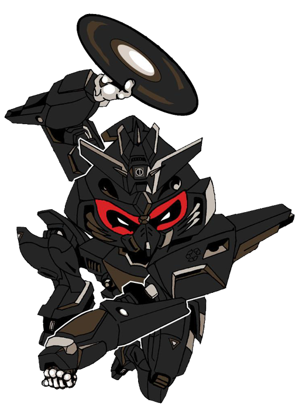

El downtempo es el resultado de varios géneros urbanos (incluyendo géneros de la escena Urban) que buscaban relajarse de una puta vez.
Downtempo is the result of various urban genres (including genres from the Urban scene) looking to chill the fuck out.
Lo que mantiene todo unido es ese groove inconfundible que se siente como si el Funk y el Dub hubieran tenido un hijo haciendo el amor tiernamente en un sofá cómodo.
The glue holding it all together is the unmistakable groove that feels like the offspring of Funk and Dub making sweet love on a comfy sofa.
Uno de los actos más exitosos dentro de este género, Kruder & Dorfmeister, sabía que con un poco de Pop, Hip Hop, o incluso Drum n Bass alcanzaba y sobraba. O tomá a Thievery Corporation, que sumando ritmos latinos a la mezcla, logró momentos verdaderamente sensuales.
One of the most successful acts within this genre, Kruder & Dorfmeister, knew that a little Pop, Hip Hop, or even Drum n Bass was all you needed. Or take Thievery Corporation, adding Latin jams to the mix, made for some proper sexy times indeed.
Naturalmente, un género tan laxo en sus definiciones va a tener varios sellos apoyando el sonido, pero ninguno llegó a dominar el Downtempo tan por completo como Ninja Tune.
Naturally a genre this loose in its definitions will have a number of labels supporting the sound, but none come to dominate Downtempo so thoroughly as Ninja Tune.
Una pregunta habitual que surge es cuál es la diferencia entre Downtempo y Chill Out. ¿No son ambos formas de música para relajarse y disfrutar de unos temas? Es cierto, pero sus enfoques son distintos.
A common question that crops up is what's the difference between Downtempo and Chill Out. Aren't they both forms of music for laying back and enjoying some tunes? This is true but their approaches are different.
El Downtempo es el tipo de música que tiene sentido en lofts urbanos, enclaves chic y bares clandestinos llenos de humo, mientras que el Chill Out suele sonar cerca de piletas exóticas, encuentros meditativos y hogares suburbanos.
Downtempo is the sort of music that makes sense in urban lofts, chic enclaves, and smoky speakeasies, whereas Chill Out is typically played near exotic pools, meditative gatherings, and suburban dwellings.
